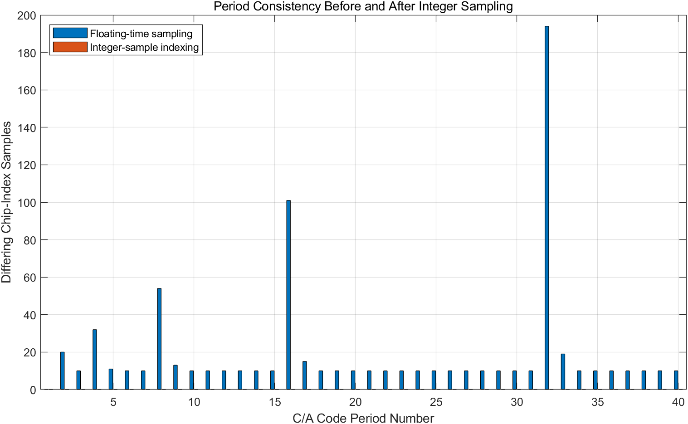
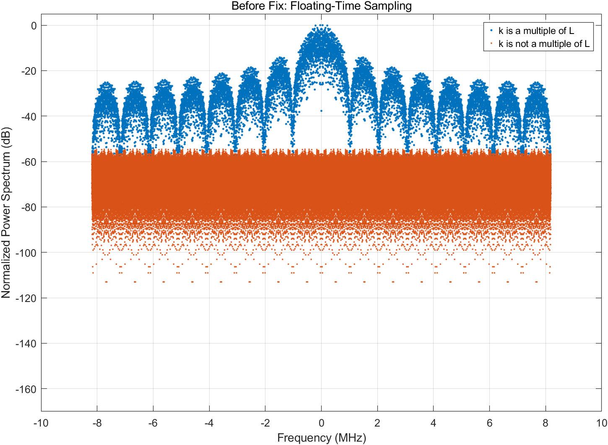
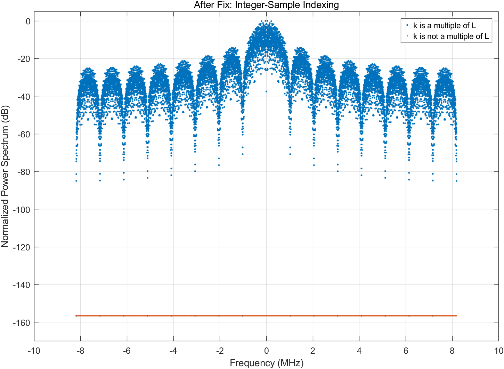
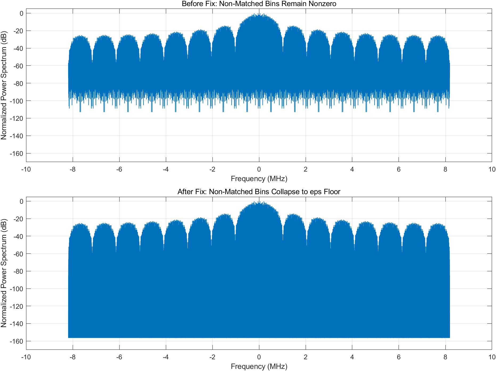

GPS C/A / BPSK-R / FFT spectrum
BPSK-R 扩频信号仿真：采样、频谱、窗函数与周期零点
这篇笔记整理一次 GPS L1 C/A BPSK-R 基带仿真实验中的关键问题：为什么采样索引用 floor+1，为什么 C/A 码下标要取模，如何画时域和功率谱，理论 sinc² 包络与实际 FFT 结果有什么区别，以及不加窗时深零点从哪里来。
BPSK-R 扩频信号仿真笔记
1. BPSK-R 基带模型
GPS L1 C/A 的基础扩频基带可以先写成：
\[ s(t)=D(t)C(t) \tag{1} \]
其中 \(D(t)\) 是导航数据 bit，典型速率为 50 bps；\(C(t)\) 是 PRN C/A 码，码长为 1023 chip，码速率为 1.023 Mcps。由于 \(1023/1.023\times10^6=1\,\text{ms}\)，C/A 码每 1 ms 重复一次。
BPSK-R 中的 R 指 rectangular chips，即矩形码片。这里没有 BOC 副载波，不需要再乘方波子载波。若仿真时长取 40 ms，就包含 40 个 C/A 码周期和 2 个导航 bit。
| 量 | 典型值 | 含义 |
|---|---|---|
| \(R_c\) | 1.023 MHz | C/A 码片速率。 |
| \(T_c\) | \(1/R_c\) | 单个码片持续时间，约 0.977 us。 |
| \(N_c\) | 1023 | 一个 C/A 周期内的码片数。 |
| \(T_{\text{code}}\) | 1 ms | 一个 C/A 码周期。 |
| \(R_d\) | 50 bps | 导航 bit 速率。 |
2. 采样索引：floor+1 和取模
在离散仿真中，时间轴通常写成：
cfg.t = (0:cfg.sampleCount - 1).' / cfg.fs;第 \(n\) 个采样点属于哪个码片，可以先看 \(t_nR_c\)。它表示“从仿真开始已经经过多少个码片周期”。采用左闭右开区间：
\[ [0,T_c)\to 1,\quad [T_c,2T_c)\to 2,\quad [2T_c,3T_c)\to 3 \tag{2} \]
于是 MATLAB 索引自然写成：
chipIndex = floor(cfg.t * cfg.codeRate) + 1;floor 给出从 0 开始的累计码片编号，+1 把它转换成 MATLAB 从 1 开始的数组下标。若每个 chip 有 16 个采样点，前 17 个采样点的下标关系就是：
0/16, 1/16, ..., 15/16 -> floor 后都是 0 -> +1 后是第 1 个 chip
16/16 -> floor 后是 1 -> +1 后是第 2 个 chipceil 不适合这里，因为 \(t=0\) 时会得到 0，并且在边界 \(t=T_c\) 处仍会归到前一个 chip，相当于边界滞后一拍。
C/A 码为什么还要取模
第一行得到的是累计码片下标：
1, 2, ..., 1023, 1024, 1025, ...但 C/A 码数组只有 1023 个元素。第 1024 个累计码片应回到下一个 C/A 周期的第 1 个码片。因此需要：
chipIndex = mod(chipIndex - 1, cfg.codeLength) + 1;这里先减 1，是把 MATLAB 的 1 基下标临时转成 0 基编号；取模后再加 1，是转回 \(1,\ldots,1023\)。它实现的是：
1, 2, ..., 1023, 1024, 1025
变成
1, 2, ..., 1023, 1, 2导航 bit 的索引类似：
navBitIndex = floor(cfg.t * cfg.navBitRate) + 1;
navBitIndex = min(navBitIndex, cfg.navBitCount);min 这里是数组和标量逐元素比较，用于防止末尾浮点误差导致索引越界。
3. 时域图应先看什么
生成基带信号后：
baseband = navSampled .* caSampled;不要直接画完整 40 ms。完整数据点太多，码片跳变会挤成一团。更适合先画 20 us 到 100 us 的局部波形，并用 stairs 而不是 plot，因为矩形码片在一个 chip 内保持不变，到边界才跳变。
plotDuration = 100e-6;
plotSampleCount = round(plotDuration * cfg.fs);
plotIndex = 1:plotSampleCount;
timeUs = cfg.t(plotIndex) * 1e6;
figure;
subplot(3,1,1); stairs(timeUs, navSampled(plotIndex));
subplot(3,1,2); stairs(timeUs, caSampled(plotIndex));
subplot(3,1,3); stairs(timeUs, baseband(plotIndex));在 100 us 内，\(D(t)\) 基本不变，因为导航 bit 周期是 20 ms；\(C(t)\) 快速跳变；\(D(t)C(t)\) 等于对 \(C(t)\) 做整体同相或反相。
4. FFT 频谱与功率谱
FFT 输出是复数：
\[ X[k]=\operatorname{Re}\{X[k]\}+j\operatorname{Im}\{X[k]\} \tag{3} \]
因此直接画 plot(freqAxis, spectrum) 时，图上出现负值是正常的：那不是“功率为负”，而是在画复数频谱的实部或复数投影。若要看幅度谱，应画：
magnitudeSpectrum = abs(spectrum);若要看功率谱，应画：
powerSpectrum = abs(spectrum).^2;归一化 dB 功率谱通常写成：
powerSpectrumDBnorm = 10 * log10(powerSpectrum / max(powerSpectrum) + eps);dB 图中出现负值也正常。最大功率归一化为 0 dB，其他频点比最大值小，所以是负 dB。例如 \(10\log_{10}(0.01)=-20\,\text{dB}\)。
频率轴若用 Hz 构造：
freqAxis = (-nfft/2:nfft/2-1) * (cfg.fs/nfft);画成 MHz 只需要除以 \(10^6\)：
plot(freqAxis / 1e6, powerSpectrumDBnorm);
xlabel('Frequency (MHz)');5. 理论 sinc² 包络
单个矩形码片脉冲可写成：
\[
p(t)=
\begin{cases}
1, & 0\le t
它的傅里叶变换为：
\[ P(f)=T_c e^{-j\pi fT_c}\operatorname{sinc}(fT_c) \tag{5} \]
因此矩形码片的功率谱包络为：
\[ |P(f)|^2=T_c^2\operatorname{sinc}^2(fT_c) \tag{6} \]
MATLAB 的 sinc(x) 定义是 \(\sin(\pi x)/(\pi x)\)。由于 \(T_c=1/R_c\)，所以：
Tc = 1 / cfg.codeRate;
theorySpectrum = Tc^2 * sinc(freqAxis * Tc).^2;如果后面又做了最大值归一化，\(T_c^2\) 会被约掉，因此只画形状时也常写成：
theorySpectrum = sinc(freqAxis / cfg.codeRate).^2;它的形状是对的，只是少了绝对幅度常数。理论第一零点在 \(\pm R_c=\pm1.023\,\text{MHz}\)。GNSS-matlab 的 GNSSspectrumgen.m 中，GPS L1 C/A 也调用 spectrum_BPSK(1.023e6,F)，其核心就是归一化的 sinc² 谱形。
6. 窗函数、卷积与“涂抹”
“不加窗”并不是没有窗，而是用了矩形窗。FFT 只能截取有限长度信号，等价于：
\[ x_{\text{obs}}(t)=x(t)w_T(t) \tag{7} \]
时域相乘，对应频域卷积：
\[ X_{\text{obs}}(f)=X(f)*W_T(f) \tag{8} \]
矩形窗的频谱是 sinc 形状。于是原始频谱中的每个频率成分，都会被窗函数频谱的形状向周围扩散。
“用一个函数的形状去替换每一个点”如何从公式理解
卷积定义为：
\[ Y(f)=(X*W)(f)=\int_{-\infty}^{\infty}X(\nu)W(f-\nu)\,d\nu \tag{9} \]
其中 \(W(f-\nu)\) 表示把 \(W\) 平移到 \(\nu\) 附近，\(X(\nu)\) 决定这份平移后的形状权重有多大。积分就是把所有频率位置的平移副本叠加起来。
若原始频谱只有一根理想谱线：
\[ X(f)=\delta(f-f_0) \tag{10} \]
利用冲激卷积性质：
\[ \delta(f-f_0)*W(f)=W(f-f_0) \tag{11} \]
所以位于 \(f_0\) 的一根无限细谱线，经过有限时间观察后，会变成一个以 \(f_0\) 为中心的窗函数频谱形状。若窗是矩形窗，这个形状就是 sinc。这就是“被 sinc 涂抹开”的精确定义。
为什么不加窗会有尖锐起伏
矩形窗的 sinc 旁瓣较高且振荡明显。很多谱线的 sinc 副本叠加后，有些频点相加变大，有些频点相互抵消接近 0；转成 dB 后，近零点就表现为很深的竖线。
7. 周期结构与深零点
C/A 码严格按 1 ms 周期重复时，它不是连续平滑谱，而是以 1 kHz 为间隔的离散谱线。若总采样点数为：
\[ N=LN_0 \tag{12} \]
其中 \(N_0\) 是一个周期的采样点数，\(L\) 是截取的周期数，则 DFT 的第 \(k\) 个频点为：
\[ X[k]=\sum_{n=0}^{N-1}x[n]e^{-j2\pi kn/N} \tag{13} \]
把样点下标写成 \(n=\ell N_0+r\)，其中 \(\ell\) 表示第几个周期，\(r\) 表示周期内第几个点：
\[ X[k]= \sum_{\ell=0}^{L-1}\sum_{r=0}^{N_0-1} x[r]e^{-j2\pi k(\ell N_0+r)/N} \tag{14} \]
拆开后得到：
\[ X[k]= \left(\sum_{r=0}^{N_0-1}x[r]e^{-j2\pi kr/N}\right) \left(\sum_{\ell=0}^{L-1}e^{-j2\pi k\ell/L}\right) \tag{15} \]
等比级数为什么只在部分频点不为零
令：
\[ q=e^{-j2\pi k/L} \tag{16} \]
则第二项是：
\[ S=1+q+q^2+\cdots+q^{L-1} \tag{17} \]
若 \(q\ne1\)，等比级数为：
\[ S=\frac{1-q^L}{1-q} \tag{18} \]
而：
\[ q^L=e^{-j2\pi k}=1 \tag{19} \]
所以 \(S=0\)。只有当 \(q=1\)，也就是 \(k\) 是 \(L\) 的整数倍时，每一项都等于 1，和为 \(L\)：
\[ \sum_{\ell=0}^{L-1}e^{-j2\pi k\ell/L} = \begin{cases} L,& k\equiv0\pmod L\\ 0,& \text{otherwise} \end{cases} \tag{20} \]
\(k\) 和 \(L\) 的意义
频点和周期结构匹配，不是说“频点是周期的整数倍”，而是说该频率是否是周期重复基频 \(f_0=1/T_0\) 的整数倍：
\[ f_k=m f_0 \tag{21} \]
代入 \(f_k=kF_s/N\)、\(f_0=F_s/N_0\)、\(N=LN_0\)，得到：
\[ k=mL \tag{22} \]
也就是 \(k\) 必须是 \(L\) 的整数倍。不匹配时，不同周期之间的复指数相位不对齐，向量相加会相互抵消，FFT 值就会很小甚至为零。
为什么 0.5115 MHz 附近会很小
0.5115 MHz 等于 \(1.023\,\text{MHz}/2\)，也是 \(511.5\,\text{kHz}\)。C/A 码周期基频为：
\[ f_0=\frac{1}{1\,\text{ms}}=1\,\text{kHz} \tag{23} \]
因此 511.5 kHz 正好落在 511 kHz 和 512 kHz 两条周期线谱中间，不是 \(1\,\text{kHz}\) 的整数倍。相邻 C/A 周期在这个频率上的相位差为：
\[ e^{-j2\pi fT_0} =e^{-j2\pi\cdot511.5} =-1 \tag{24} \]
40 个周期相加时，正负相消非常强，于是该频率附近功率极低。它不是矩形码片 sinc² 的零点，因为 sinc² 的第一零点在 \(\pm1.023\,\text{MHz}\)；它来自周期重复结构和有限长 FFT 的相消。
8. MATLAB 绘图实践
8.1 加窗和不加窗应该如何比较
Hann 窗会降低旁瓣、平滑谱形，但也会加宽主瓣并改变峰值幅度。不加窗保留了更强的周期相消和深零点，图上会更尖锐。比较时最好同时画归一化功率谱，而不是直接画复数 FFT。
sig = double(baseband(:));
nfft = 2 ^ nextpow2(numel(sig));
freqAxis = (-nfft/2:nfft/2-1) * (cfg.fs/nfft);
window = hann(numel(sig));
spectrumWindowed = fftshift(fft(sig .* window, nfft));
spectrumRaw = fftshift(fft(sig, nfft));
psdWindowedDb = 10 * log10(abs(spectrumWindowed).^2 / max(abs(spectrumWindowed).^2) + eps);
psdRawDb = 10 * log10(abs(spectrumRaw).^2 / max(abs(spectrumRaw).^2) + eps);8.2 叠加理论包络
Tc = 1 / cfg.codeRate;
theorySpectrum = Tc^2 * sinc(freqAxis * Tc).^2;
theorySpectrumDb = 10 * log10(theorySpectrum / max(theorySpectrum) + eps);
figure;
plot(freqAxis / 1e6, psdWindowedDb, 'LineWidth', 1);
hold on;
plot(freqAxis / 1e6, psdRawDb, 'LineWidth', 1);
plot(freqAxis / 1e6, theorySpectrumDb, 'LineWidth', 1.2);
grid on;
xlabel('Frequency (MHz)');
ylabel('Normalized Power Spectrum (dB)');
title('Simulation vs Theory');
legend('Windowed Simulation', 'No Window Simulation', 'Theory');8.3 点击图例隐藏和显示曲线
普通 legend(...) 只显示图例，不会自动支持点击隐藏曲线。若项目里已有 plots.enableLegendToggle，可以保存图例句柄并绑定回调：
lgd = legend('Windowed Simulation', 'No Window Simulation', 'Theory');
plots.enableLegendToggle(lgd);其核心逻辑是给 legend 设置 ItemHitFcn，在点击图例项时切换对应绘图对象的 Visible 属性。
9. 代码检查：修改前后对比
这次调试中最容易混在一起的有两个问题：一是 C/A 码采样索引由浮点时间相位计算，导致 40 个 1 ms 周期并不完全相同；二是画 fftshift 后的匹配/非匹配频点时，掩码也必须同步 fftshift。第一个问题会影响命令行统计值，第二个问题主要影响移频图里的蓝点和橙点分类。
9.1 修改前：浮点时间相位采样
最初的 C/A 码采样写法是：
chipIndex = floor(cfg.t * cfg.codeRate) + 1;
chipIndex = mod(chipIndex - 1, cfg.codeLength) + 1;
caSampled = caCode(chipIndex);从数学模型看，这正是左闭右开区间的实现。但在离散机算中，cfg.t * cfg.codeRate 是浮点数运算，本来应该等于整数的 chip 边界可能变成 15.999999999999996 或 16.000000000000004。于是 floor 会把少数边界采样点分到相邻 chip，造成 40 个 C/A 周期不是严格重复。
9.2 修改后：整数采样点索引
在本实验里采样率是 C/A 码速率的整数倍：
cfg.fs / cfg.codeRate = 16因此更稳妥的实现是直接用整数采样点编号计算码片索引：
% 伪码采样：用整数采样点编号计算码片索引，避免浮点边界误差
sampleIndex0 = (0:cfg.sampleCount - 1).';
samplesPerChip = round(cfg.samplesPerChip);
chipIndex = floor(sampleIndex0 / samplesPerChip) + 1;
chipIndex = mod(chipIndex - 1, cfg.codeLength) + 1;
caSampled = caCode(chipIndex);这个写法仍然保留 floor()+1 的区间含义，只是把自变量从浮点时间相位换成整数采样点编号。结果是每 16 个采样点严格对应 1 个 chip，每 16368 个采样点严格对应 1 个 C/A 周期。

9.3 MATLAB 修改前后统计结果
为了避免依赖当前 BPSK_R.m 处于哪个版本，笔记中新增了独立复现实验脚本 generate_sampling_comparison_figures.m。它同时构造“修改前”和“修改后”两套 C/A 采样序列，并使用不补零、不开窗的 DFT 检查周期匹配频点：
修改前：浮点时间相位采样
和第 1 个周期不同的周期数: 39
最多单周期不同索引点数: 194
总不同索引点数: 759
周期匹配频点最大值: 0.00 dB
非周期匹配频点最大值: -54.64 dB
非周期匹配频点最小值: -112.99 dB
修改后：整数采样点索引采样
和第 1 个周期不同的周期数: 0
最多单周期不同索引点数: 0
总不同索引点数: 0
周期匹配频点最大值: 0.00 dB
非周期匹配频点最大值: -156.54 dB
非周期匹配频点最小值: -156.54 dB这说明原来看到的 -54.64 dB 并不是周期理论失效，而是输入给 DFT 的序列已经不是严格的周期重复序列。改成整数采样后，非周期匹配频点落到 10*log10(eps) 附近，即约 -156.5 dB。这里的 eps 是 dB 计算中人为加上的机器精度下限，用来避免 log10(0)。



9.4 “值不为 0 的点”到底是什么？
图上的每一个点都来自 DFT 结果，但不是直接画复数 X[k]。实际画的是归一化功率谱：
caSamplesSpectrum = fft(caSignal, caSignalLength);
caSamplesPower = abs(caSamplesSpectrum).^2;
caSamplesPowerDBnorm = 10 * log10(caSamplesPower / max(caSamplesPower) + eps);所以点的 dB 值表示该频点功率相对于最大频点小多少。若严格周期条件成立，k 不是 L 的整数倍时，周期间相位因子为 0，DFT 结果为 0；在图上因为加了 eps，显示为约 -156.5 dB。若当前序列含有采样边界误差，可以理解为：
\[ x[n]=x_{\text{periodic}}[n]+e[n] \]
其中严格周期部分在非匹配频点相消为 0，但误差项 \(e[n]\) 的 DFT 一般不为 0，因此会看到 -54 dB 到 -113 dB 这样的残余点。
9.5 移频图的掩码也要同步移频
当前代码中已经定义了：
MatchBinShift = fftshift(MatchBin);
UnMatchBinShift = fftshift(UnMatchBin);如果后面画的是 caSamplesPowerShiftDBnorm，遮罩也应该使用移频后的掩码：
PowerMatchedDb = caSamplesPowerShiftDBnorm;
PowerMatchedDb(UnMatchBinShift) = NaN;
PowerUnmatchedDb = caSamplesPowerShiftDBnorm;
PowerUnmatchedDb(MatchBinShift) = NaN;命令行统计值用的是未移频的 caSamplesPowerDBnorm 和未移频的 MatchBin / UnMatchBin，所以它不受这个绘图遮罩问题影响。这个问题只会让移频图中的蓝点和橙点分类在横轴上错位。
10. 一页总结
采样索引：
\[ \text{chipIndex}=\left\lfloor tR_c\right\rfloor+1,\qquad \text{chipIndex}=\bmod(\text{chipIndex}-1,1023)+1 \]
工程实现中，如果 \(F_s/R_c\) 是整数，更推荐用整数采样点编号代替浮点时间相位，避免边界处的机器精度误差破坏严格周期性。
基带扩频：
\[ s(t)=D(t)C(t) \]
矩形码片功率谱包络：
\[ |P(f)|^2=T_c^2\operatorname{sinc}^2(fT_c) \]
有限观测：
\[ X_{\text{obs}}(f)=X(f)*W_T(f) \]
周期重复导致的频点选择：
\[ \sum_{\ell=0}^{L-1}e^{-j2\pi k\ell/L} = \begin{cases} L,& k\equiv0\pmod L\\ 0,& \text{otherwise} \end{cases} \]
最重要的直觉是：理论 sinc² 给出矩形码片的外层包络；真实 FFT 图还叠加了 C/A 码周期线谱、有限观测窗、零填充频率采样和导航 bit 翻转。看到很深的竖线时，先判断它是 sinc² 包络零点，还是周期重复和有限窗口相消造成的近零点。
11. 侧边聊天问答整理
本节把整理这篇笔记时侧边聊天中的提问和回答按主题补充进来。前面的正文已经把结论按推导顺序重组；这里保留问答形态，便于回看当时每个疑问是如何被拆开的。
11.1 矩形窗为什么会让频谱出现尖锐起伏和深零点？
问：矩形窗会把原始频谱与一个 sinc 函数卷积。sinc 有明显旁瓣和零点，因此不加窗时频谱中更容易出现尖锐起伏和深零点。这个怎么理解？
答：“不加窗”并不是真的没有窗，而是用了矩形窗。实际 FFT 只能取有限长度信号，因此分析对象不是无限长的 \(x(t)\)，而是：
\[ x_{\text{obs}}(t)=x(t)\operatorname{rect}(t) \]
时域相乘对应频域卷积：
\[ X_{\text{obs}}(f)=X(f)*W_{\text{rect}}(f) \]
矩形窗的频谱是 sinc。sinc 主瓣较窄、旁瓣较高，并且不断振荡。卷积以后，原始频谱中的能量会被 sinc 的主瓣和旁瓣扩散到邻近频率；多个频率成分的 sinc 副本叠加时，有些频点相加变大，有些频点相互抵消变小。接近 0 的频点转成 dB 后，就会表现为很深的竖线。
对 C/A 码这类周期重复信号，这个现象更明显，因为原始频谱本来就有很多离散谱线。矩形窗会把每一根谱线都扩展成一个 sinc，许多 sinc 叠加后形成尖峰和深谷。Hann 窗的作用是平滑截断边缘，降低旁瓣；代价是主瓣变宽，但图形通常更平滑。
11.2 “被 sinc 形状涂抹开”是什么意思？
问：被一个 sinc 形状“涂抹”开怎么理解？
答：可以从单频信号理解。若原始信号只有一个理想频率 \(f_0=1\,\text{MHz}\)，无限长时它的频谱是一根无限细的谱线。有限时间截取以后，原来集中在 \(f_0\) 的能量不再只停在一个频率点，而是扩散成一个以 \(f_0\) 为中心的窗函数频谱形状。
如果窗是矩形窗，这个形状就是 sinc。直观上：
无限长信号：频谱像一根针，能量集中在一个频率点。
有限截断后：频谱像一个 sinc，主瓣在原频率处，旁瓣向两边延伸。如果原始频谱里有很多谱线，那么每一根谱线都会被扩散成一个 sinc；这些 sinc 相加后，就会形成有限长 FFT 中看到的峰、谷和旁瓣。
11.3 卷积为什么能把 1 MHz 的细线变成 sinc？
问：卷积的意义是什么？为什么可以把 1 MHz 的细线涂抹开？
答：卷积可以理解为“用一个函数的形状，去扩散另一个函数里的每一个点”。无限长正弦：
\[ x(t)=\cos(2\pi f_0t) \]
在频域是位于 \(\pm f_0\) 的理想冲激。只看正频率时，可以写成：
\[ X(f)=\delta(f-f_0) \]
有限截取等价于乘窗：
\[ x_{\text{obs}}(t)=x(t)w(t) \]
频域变为卷积：
\[ X_{\text{obs}}(f)=X(f)*W(f) \]
利用冲激卷积性质：
\[ \delta(f-f_0)*W(f)=W(f-f_0) \]
所以原来位于 \(f_0\) 的一根细线，卷积后会变成以 \(f_0\) 为中心的 \(W(f)\)。如果 \(W(f)\) 是 sinc，那么细线就变成了一个以 1 MHz 为中心的 sinc。更直观地说：无限长正弦频率完全确定；只观察 40 ms 时，频率不再无限精确，能量必须在频域中占据一个有限宽度。
11.4 “替换/扩散每一个点”如何从卷积公式看出来？
问：卷积就是“用一个函数的形状，去替换/扩散另一个函数里的每一个点”。这个如何通过公式理解？
答：连续卷积定义为：
\[ Y(f)=(X*W)(f)=\int_{-\infty}^{\infty}X(\nu)W(f-\nu)\,d\nu \]
这里 \(W(f-\nu)\) 是把 \(W\) 平移到频率 \(\nu\) 附近，\(X(\nu)\) 决定这一份平移副本的权重。积分就是把所有频率位置的平移副本叠加起来。
若原始频谱有多根谱线：
\[ X(f)=a_1\delta(f-f_1)+a_2\delta(f-f_2)+a_3\delta(f-f_3) \]
卷积后就是：
\[ Y(f)=a_1W(f-f_1)+a_2W(f-f_2)+a_3W(f-f_3) \]
所以每一根谱线都会被替换成一个平移后的 \(W\)，再按对应幅度加权叠加。有限长 FFT 中，\(W\) 就是窗函数频谱。
11.5 周期结构下 DFT 为什么能拆成两层求和？
问：离散 FFT 中，如果 \(x[n]\) 有周期结构，\(N=LN_0\)，把 \(n\) 写成 \(\ell N_0+r\) 的过程是怎么推导的？
答：DFT 定义为：
\[ X[k]=\sum_{n=0}^{N-1}x[n]e^{-j2\pi kn/N} \]
若信号由 \(L\) 个周期组成，每个周期有 \(N_0\) 个采样点，则：
\[ N=LN_0 \]
任意样点下标 \(n\) 都可以唯一写成：
\[ n=\ell N_0+r \]
其中 \(\ell=0,1,\ldots,L-1\) 表示第几个周期，\(r=0,1,\ldots,N_0-1\) 表示周期内第几个采样点。于是原来对 \(n\) 的一个求和，可以改写为对周期编号和周期内编号的双重求和：
\[ X[k]= \sum_{\ell=0}^{L-1}\sum_{r=0}^{N_0-1} x[\ell N_0+r]e^{-j2\pi k(\ell N_0+r)/N} \]
如果 \(x[n]\) 以 \(N_0\) 为周期，则 \(x[\ell N_0+r]=x[r]\)，因此：
\[ X[k]= \sum_{\ell=0}^{L-1}\sum_{r=0}^{N_0-1} x[r]e^{-j2\pi k(\ell N_0+r)/N} \]
把指数项拆开，就得到正文中的周期内结构项和周期间相位项。
11.6 等比级数为什么结果是 \(L\) 或 0？
问：\(\sum_{\ell=0}^{L-1}e^{-j2\pi k\ell/L}\) 这段等比级数的结果怎么算？
答：令：
\[ q=e^{-j2\pi k/L} \]
则该和式是：
\[ S=1+q+q^2+\cdots+q^{L-1} \]
若 \(q\ne1\)，等比级数求和公式给出：
\[ S=\frac{1-q^L}{1-q} \]
又因为 \(k\) 是整数：
\[ q^L=e^{-j2\pi k}=1 \]
所以 \(S=0\)。特殊情况是 \(q=1\)，也就是 \(e^{-j2\pi k/L}=1\)，等价于 \(k\) 是 \(L\) 的整数倍。此时每一项都是 1，一共 \(L\) 项，所以 \(S=L\)。最终：
\[ \sum_{\ell=0}^{L-1}e^{-j2\pi k\ell/L} = \begin{cases} L,& k\equiv0\pmod L\\ 0,& \text{otherwise} \end{cases} \]
直观上，若 \(k\) 是 \(L\) 的整数倍，各周期相位完全对齐；否则这些复指数点均匀绕单位圆分布，矢量和为 0。
11.7 频点和周期结构“不匹配”是什么意思？
问：当频点和周期结构不匹配时，是否意味着此时的频点不是周期的整数倍？
答：更准确的说法是：频率 \(f_k\) 是否是周期重复基频 \(f_0=1/T_0\) 的整数倍。不能直接说“频点是周期的整数倍”，因为频率单位是 Hz，周期单位是 s。
FFT 的第 \(k\) 个频点为：
\[ f_k=\frac{kF_s}{N} \]
周期结构的基频为：
\[ f_0=\frac{F_s}{N_0} \]
如果 \(f_k=mf_0\)，代入 \(N=LN_0\)：
\[ \frac{kF_s}{LN_0}=m\frac{F_s}{N_0} \]
可得：
\[ k=mL \]
所以匹配条件是 \(k\) 为 \(L\) 的整数倍，或等价地说 \(f_k\) 落在周期信号允许的离散谱线 \(mf_0\) 上。不匹配时，相邻周期之间相位不完全对齐，多周期求和会相互抵消。
11.8 \(k\) 和 \(L\) 分别代表什么？
问：\(k\) 和 \(L\) 的意义是什么？
答：在 \(N=LN_0\) 中：
| 符号 | 含义 |
|---|---|
| \(N_0\) | 一个周期有多少个采样点。 |
| \(L\) | 总共截取了多少个周期。 |
| \(N\) | 总采样点数，\(N=LN_0\)。 |
| \(k\) | FFT 的频点编号，取 \(0,1,\ldots,N-1\)。 |
第 \(k\) 个频点对应频率：
\[ f_k=\frac{kF_s}{N} \]
以 40 ms C/A 码仿真为例，C/A 码周期是 1 ms，因此截取了 \(L=40\) 个周期。只考虑严格 1 ms 周期重复结构时，\(k=0,40,80,\ldots\) 这些频点与周期结构匹配；其他频点则容易发生周期间相消。
11.9 本次笔记整理与网页发布记录
问：帮我整理这个对话的所有内容写一篇笔记发布到 SHENAO1.github.io 的个人笔记仓库内，重新组织语言顺序和逻辑，使得笔记通顺。
答：笔记被整理为当前页面，放在 notes/signal/bpsk-r-sampling-spectrum-windowing/，并在 Signal 专题索引中增加入口。正文采用“信号生成流程、采样索引、频谱公式、窗函数卷积、周期 FFT 零点、MATLAB 绘图实践”的顺序，而不是按聊天时间线直接堆叠。
问：发布到网页端。
答：页面已推送到 GitHub Pages，对应在线地址为 https://shenao1.github.io/notes/signal/bpsk-r-sampling-spectrum-windowing/。后续补充内容也通过同一流程提交并推送，由 GitHub Pages 自动部署到网页端。